Tutorial: Node Graph Editing in Python¶
In Gaffer, you can interactively manipulate node graphs in Python using the Python Editor. Gaffer’s API is fairly frugal, so learning a few fundamental concepts and tasks will go a long way. In this tutorial, we will give you a quick tour of these fundamentals. Using only Python, you will create a simple graph that consists of a camera and a mauve sphere:
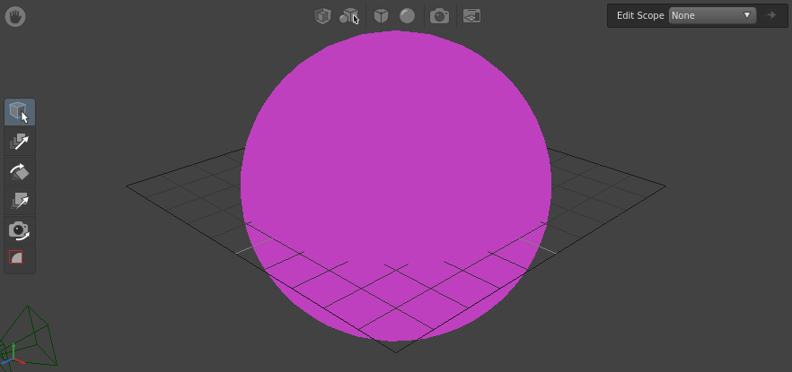
By the end of this tutorial, you should have an understanding of the following topics in Python:
- The Python Editor
- Importing modules
- Creating nodes
- Node and plug references
- Setting plug values
- Node connections
- Deleting nodes
Note
For this tutorial, we will assume you are familiar with the Python language.
Before you begin, we highly recommend you complete the Assembling the Gaffer Bot tutorial.
The Python Editor¶
With the built-in Python Editor, you can build and modify the node graph, test API code and syntax, return plug values, and query scenes and images. In the default layout, the editor is in the bottom-right panel, under a tab next to the Hierarchy View.
The bottom-half of the Python Editor is the code input field. The top-half is the code output log. Try executing a “Hello, World!” command:
- Type
print "Hello, World!"into the input field. - Hit Ctrl + Enter to execute the code.
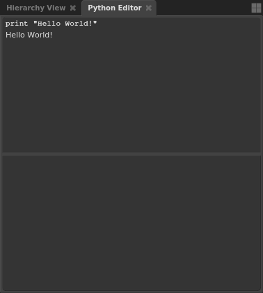
Creating nodes¶
In the Gaffer API, each node is an instance (in the programming sense) of a class, with each class belonging to a particular Python module. In order to create a node sourced from a module, you will first need to import that module.
Tip
A list of each of Gaffer’s default modules can be found in the Node Reference.
Since the scene will require a sphere primitive, import the GafferScene module, and then create a Sphere node:
import GafferScene
mySphere = GafferScene.Sphere()
root.addChild( mySphere )
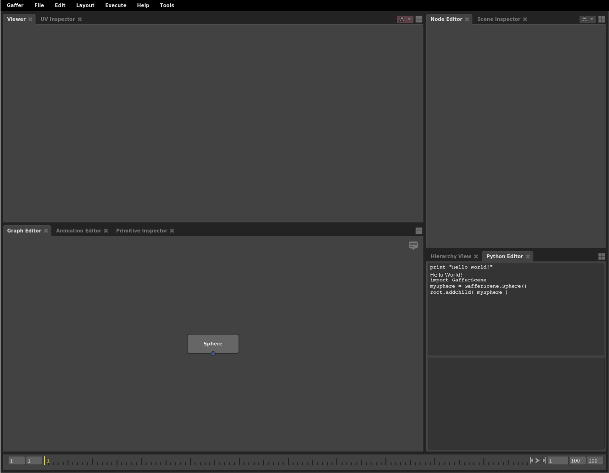
Notice that the node was added with the addChild() method to the root variable. The addChild() method is the core method for adding nodes and plugs to the node graph. The root variable references the root of the node graph. All nodes in the graph are ultimately children of the root. If you declared the node variable without adding it to the root variable, it would exist in memory (all variables in Python are objects), but it would not yet be part of the graph.
Helpfully, once you import a module, it will remain loaded in that Python Editor (however, if you open a new Python Editor, you will need to import it again). The rest of the nodes you will need for this graph also come from the GafferScene module, so add them next:
myShader = GafferScene.OpenGLShader()
myShaderAssignment = GafferScene.ShaderAssignment()
myFilter = GafferScene.PathFilter()
myCamera = GafferScene.Camera()
myGroup = GafferScene.Group()
root.addChild( myShader )
root.addChild( myShaderAssignment )
root.addChild( myFilter )
root.addChild( myCamera )
root.addChild( myGroup )
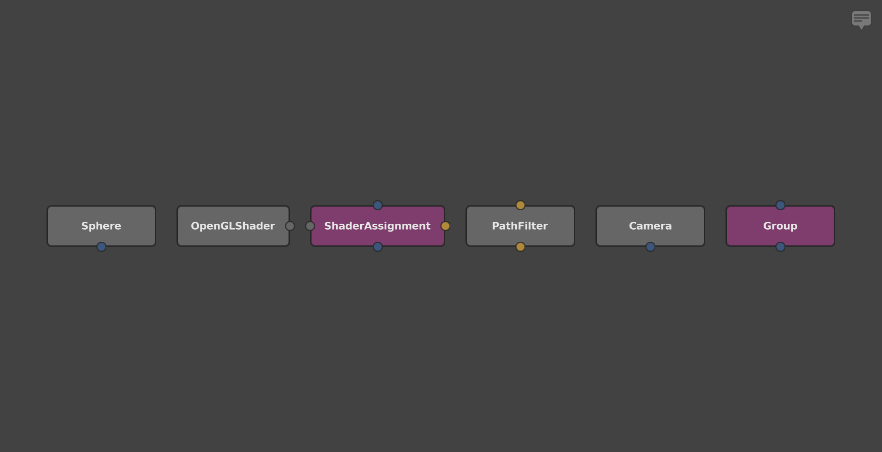
Referencing nodes without variables¶
Nodes that do not have variables can be referenced by dragging and dropping them in the interface:
- Middle-click and drag a node from the Graph Editor (the cursor will change to ).
- Release the selection onto the input field of the Python Editor.
Loading shaders¶
Before we move on to plugs, you should complete the node creation process by loading a shader into the OpenGLShader node. Shader nodes start out blank, so there is one additional step required, which is to load a shader configuration. For this graph, all you need is a simple color. Load a constant shader with the loadShader() method:
myShader.loadShader( 'Constant' )
Referencing plugs¶
Since a node’s default plugs are created automatically, they have no assigned variables, so you will need to reference them another way. In the API, plugs in the graph (and also, in fact, the nodes and the root variable) can each be treated like a Python dictionary, with key-value pairs. When editing plug values, it is usually necessary to first reference them in dictionary syntax.
For example, you could reference the Radius plug of the Sphere node like this:
mySphere['radius']
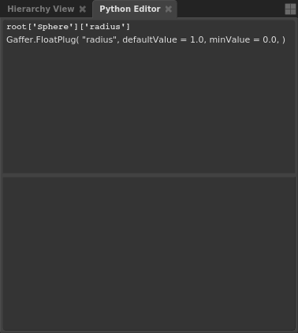
Caution
Because Python dictionaries do not have built-in overwrite protection, you can accidentally and irrecoverably replace nodes and plugs with assignments that use existing node names, like root['Sphere'] = .... Use dictionary syntax with care.
Just like with nodes, you can insert a reference to a plug by dragging. Try inserting a reference to Radius plug of the Sphere node:
- Select the Sphere node in the Graph Editor.
- Click and drag the label of the Radius plug from the Node Editor (the cursor will change to ).
- Release it onto the input field of the Python Editor.
A reference to root['Sphere']['radius'] will be inserted. This is identical to mySphere['radius'] from earlier. Notice how when you drag and drop plugs, the reference is formatted in dictionary syntax.
Important
Dragging and dropping plugs is a core technique when using the Python Editor. It can speed up your node graph editing and inspecting considerably.
Retrieving a plug value¶
The getValue() method retrieves a plug’s value. Try it on the Cs (color) plug of the OpenGLShader node:
myShader['parameters']['Cs'].getValue()
There is also a shortcut for grabbing a plug value, which involves Shift + clicking and dragging the plug label from a Node Editor (the cursor will change to ) and releasing it onto the input field of the Python Editor:
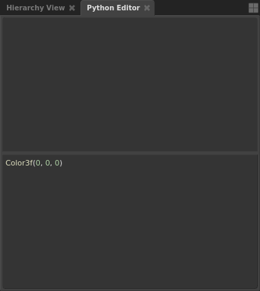
Tip
The above shortcut can also be very handy in regular use. For instance, if you need to know the type and format of a particular plug’s value, dragging it into the Python Editor will reveal it.
Editing a plug value¶
The setValue() method edits plug values. It functions on plugs with both single and multi-element data types.
Editing plugs with one element is simple. All you need to provide is the value. Try increasing the radius of the sphere:
mySphere['radius'].setValue( 4 )
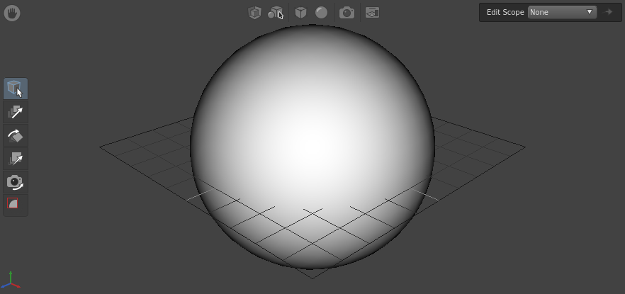
When editing a plug with multiple elements, such as a vector, color, matrix, etc., you can either edit all the values at once, or one at a time. Editing all the values at once requires formatting the value in the type’s syntax. Most of the multi-element types belong to the imath utility module, so before you can edit them, you will first need to import it.
Editing the remaining plugs¶
In this next part, we will step you through the remaining plug edits for your node graph. For each of the following plugs you edit, you will see little to no change, because the nodes are not yet connected. Think of these steps as preparing the plugs.
3-color plugs (colors with no alpha channel) use the Color3f() type, so first, import imath and set the OpenGLShader node’s Cs plug:
import imath
myShader['parameters']['Cs'].setValue( imath.Color3f( 0.25, 0.75, 0.25 ) )
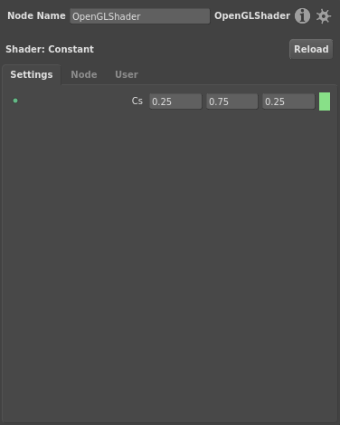
Next, adjust the camera position, but this time specify only the z-axis value of the transform, with dictionary syntax:
myCamera['transform']['translate']['z'].setValue( 8 )
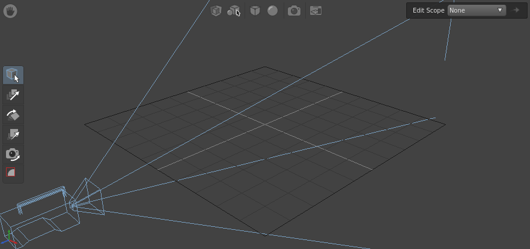
Finally, add a location to the paths plug of the PathFilter node:
import IECore
myFilter['paths'].setValue( IECore.StringVectorData( [ '/sphere' ] ) )
The above code is more advanced than what we have shown so far, but you will likely need it at some point when editing node graphs. Any time you edit a plug that can take multiple strings, you will need to format the strings as a list, with IECore.StringVectorData(). When using this method, remember to first import the IECore module.
Connecting nodes¶
Nodes do not connect together: their plugs do. The setInput() method connects a destination plug to a source plug.
The input and output plugs on scene nodes that are visible in the Graph Editor follow this naming scheme:
- Output (bottom edge of node): out
- Input (top edge of node): in
- Filter input (right edge of node): filter
- Shader input (left edge of node): shader
Note
You are not limited to connecting the default plugs visible in the Graph Editor. The setInput() method can connect most pairs of plugs.
For example, to connect scene node A to scene node B, an in plug of node B is connected to the out plug of node A.
Since the ShaderAssignment node has all three types of scene node input plugs, start by connecting it:
myShaderAssignment['in'].setInput( mySphere['out'] ) # Main input/output
myShaderAssignment['shader'].setInput( myShader['out'] ) # Shader input/output
myShaderAssignment['filter'].setInput( myFilter['out'] ) # Filter input/output
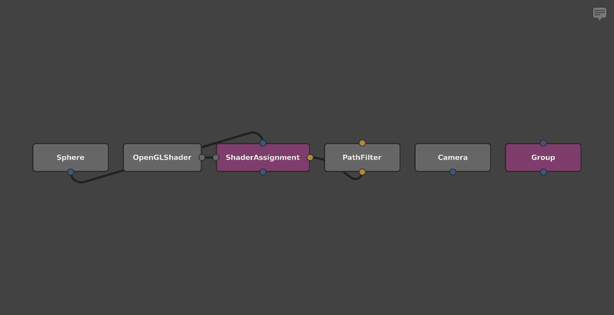
A node that takes multiple input scenes, like the Group node, is slightly different. Its in plug is an ArrayPlug that consists of multiple children, each a separate scene input accessed via integer index:
myGroup['in'][0].setInput( myShaderAssignment['out'] )
myGroup['in'][1].setInput( myCamera['out'] )
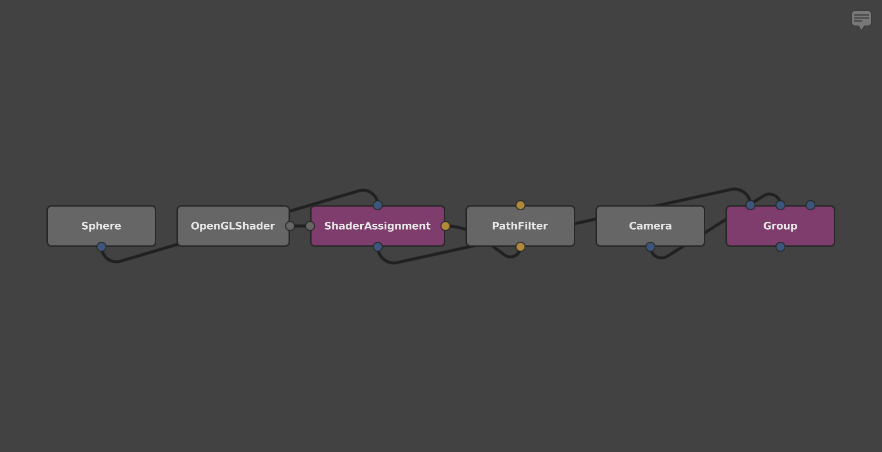
Caution
Scene nodes with an ArrayPlug input automatically maintain one free child, so that there is always at least one input available. Make sure to connect their child plugs in order: ['in'][0], ['in'][1], ['in'][2], etc. Connecting them out-of-order will return an error.
As you probably noticed, the graph looks tangled up, but that’s a consequence of scripting a graph piece-by-piece. Correct this by selecting all the nodes, and then hitting Ctrl + L.
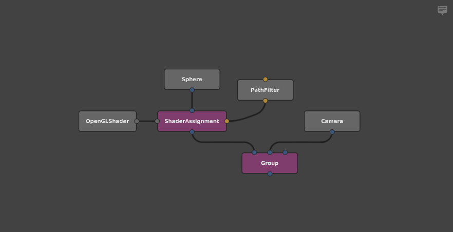
Much better!
Tip
When creating a node graph using Python, if you add the nodes, declare variables for them, connect them, and then add them to root all at once, they will automatically and evenly lay themselves out. In fact, that is essentially what Gaffer scripts do when loaded.
Here is the final graph:
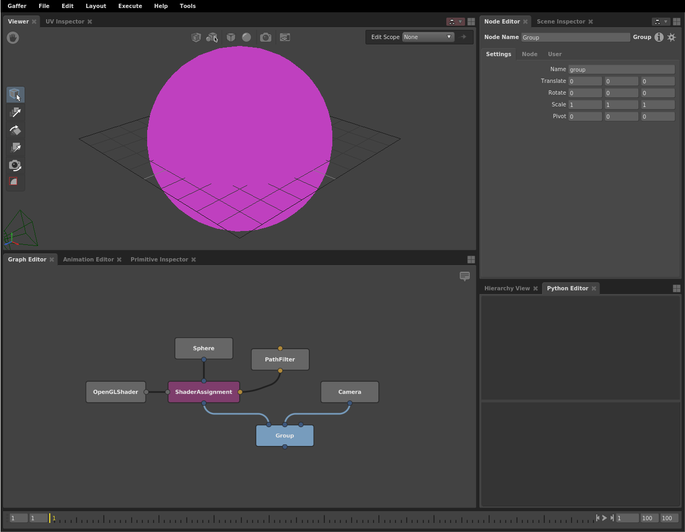
Deleting nodes¶
There’s one final common operation you may want to perform on nodes using Python: deletion. Nodes and plugs both have a removeChild() method. Try removing the Sphere node:
root.removeChild( mySphere )
Recap¶
That covers the most common methods and tasks when using Python to edit node graphs. As we have shown, you have the capacity to accomplish almost all interface actions in Python, demonstrating the power and flexibility of the API.